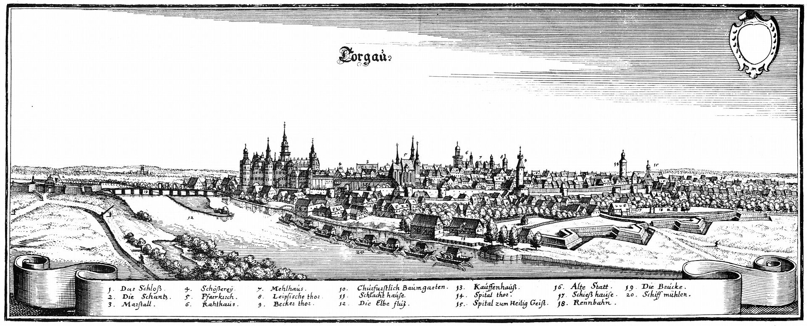
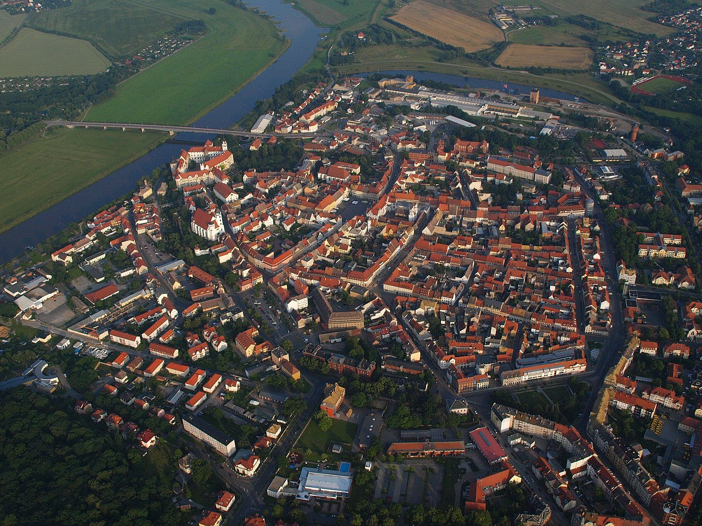
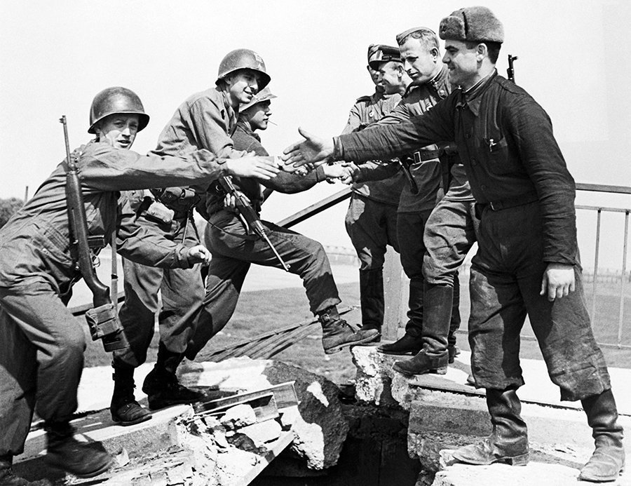
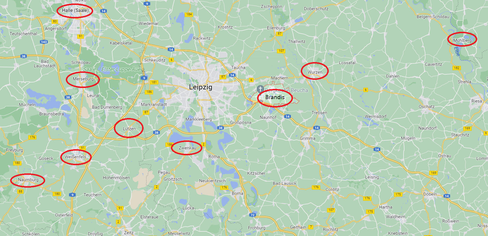
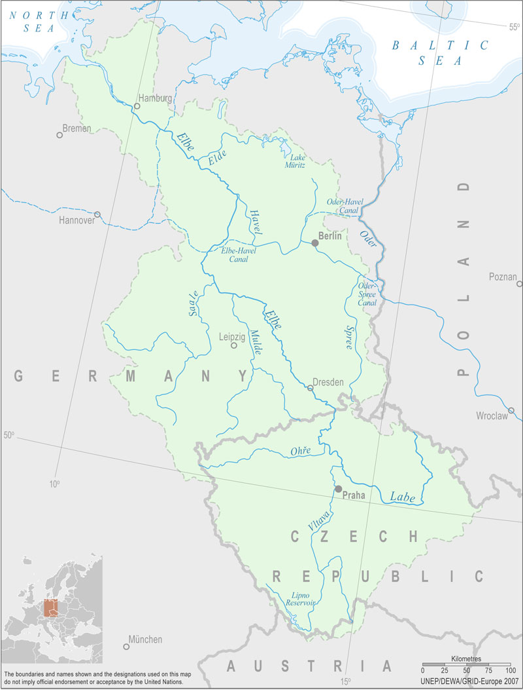
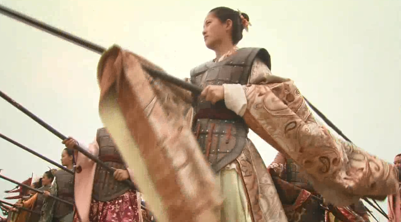
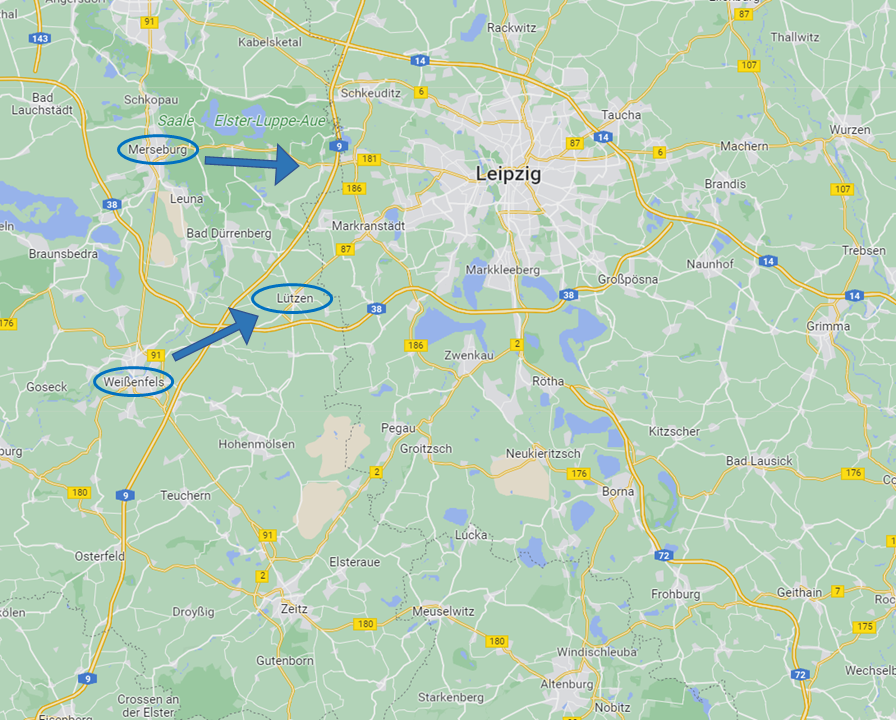

누가 비트겐슈타인을 괴롭히나 - 손무의 일화
게시: 2022-08-22T06:30:41+09:00
비트겐슈타인의 작전안은 매우 뛰어난 분석과 예측에 기반하여 만들어졌습니다. 그 핵심은 현재까지 포착된 프랑스군의 이동 및 집결 상황으로 볼 때, 나폴레옹의 의도는 라이프치히를 거쳐 토르가우(Torgau)로 진격하여 그 곳의 포위를 푸는 것이 목적이라는 것이었습니다. 그 이후에는 아마도 베를린으로 진격하여 프로이센을 굴복시키려 할 것이라고 비트겐슈타인은 보았습니다. 프로이센의 수도인 베를린으로 갈지 연합군의 근거지인 슐레지엔의 브레슬라우로 갈지는 사실 당시 나폴레옹도 결심을 굳히지 못한 상황이었지만, 적어도 나폴레옹의 진격 방향이 라이프치히라는 것은 정확한 판단이었습니다.

(1650년 경의 토르가우의 전경입니다. 엘베 강변의 주요 요새도시 중 하나로서, 그 앞의 다리를 장악하고 있으므로 여기를 장악하면 엘베 강을 그대로 건널 수 있습니다.)

(현재의 토르가우의 모습입니다. 요새도시일 뿐 대도시는 아니라서, 지금도 인구가 2만이 채 안 됩니다. 지금은 보방식 요새 성벽이 대부분 철거되어 있습니다.)

(토르가우는 WW2에서도 유명한 도시입니다. 1945년 4월 25일, 이 곳에서 미군과 소련군이 최초로 만났거든요.) 판단만 정확한 것이 아니었고 비트겐슈타인에게는 투지도 있었습니다. 그는 나폴레옹이 몰고 오는 대군의 진격 앞에서 물러날 생각은 없었고, 샤른호스트가 주장했던 것처럼 엘스터 강 인근에서 나폴레옹과 한판 크게 붙을 작정이었습니다. 문제는 지나친 디테일에 있었습니다. 비트겐슈타인의 작전안은 무려 6가지의 시나리오를 늘어놓으며 각 부대 하나하나의 움직임을 프랑스군의 움직임에 맞추어 세밀하게 지시해 놓았습니다. 이 작전안을 받은 사단장들이 이 작전안을 읽고 뭘 어떻게 하라는 건지 파악하는데만도 꽤 긴 시간이 걸릴 정도였습니다. 이건 턴제로 이루어지는 체스판에서나 통하는 것이었고 특히 통신과 정찰 수단이 매우 제약된 당시 전장에서는 통하지 않을 마이크로 매니지먼트였습니다. 게다가 각 시나리오에 대해 명확한 판단 기준도 제시하지 않았습니다. 가령 비트겐슈타인은 각각의 부대에 대해 '프랑스군이 강력한 공격을 해올 경우'와 '프랑스군이 약한 공격을 해올 경우', 심지어 일부 부대에 대해서는 '프랑스군이 매우 강력한 공격을 해올 경우'에 대해 각각 어떻게 대처할지에 대해 지시 사항을 작성했는데, 정작 우세한 병력과 매우 우세한 병력의 차이가 뭔지에 대해서는 언급하지 않았습니다. 이렇게 쓸데없이 자세하고 복잡한 작전안은 당연히 샤른호스트의 반발을 낳았습니다. 샤른호스트는 '만약 프랑스군이 이 6가지 시나리오에 적시되지 않은 행동, 가령 전체 부대가 잘러 강을 여러 곳에서 일제히 건널 경우엔 각 부대가 어떻게 행동해야 하는가'라며 반문하면서, 이 작전안의 가장 큰 문제는 주도권을 쥐는 것이 아니라 프랑스군의 움직임에 따라 일일이 다르게 대응하는 것에 불과하므로 결국 각개격파 당하는 결과를 낳을 뿐이라고 비난했습니다. 그러나 사실 좀 냉정하게 보면 샤른호스트와 비트겐슈타인의 기본적인 작전안은 비슷한 편이었습니다. 둘다 (1) 라이프치히 인근에서 나폴레옹과 결전을 벌인다는 것이 주된 내용이었고, (2) 나폴레옹이 잘러 강을 건너오면 행동에 나선다는 수동적인 것이었다는 점, 그리고 (3) 연합군이 상대적으로 우위를 가진 기병과 포병을 십분 활용하기 위해 평원에서 싸운다는 점을 강조했습니다. 세부적인 내용, 가령 뮐더(Mulde) 강 동쪽인 뷔르젠(Wurzen)에서 싸우느냐 뮐더 강 서쪽인 브랜디스(Brandis)에서 싸우느냐 등에서는 차이가 있었으나 어차피 이 두 장소의 거리는 10km 정도에 불과했습니다.

(브랜디스와 뷔르젠의 위치입니다. 사실 별 차이 없습니다. 기타 주요 지명들의 위치를 참조하십시요. 프랑스군은 당시 왼쪽 하단의 나움부르크-바이센펠스-뤼첸 순으로 이동하고 있었는데, 저걸 보면 프랑스군의 목표는 라이프치히라는 것이 명백했지요.)

(엘베 강과 잘러 강, 그리고 뮐더 강이 표시된 지도입니다. 엘스터 강은 아예 표시도 되어 있지 않습니다. 잘러 강도 엘베 강의 지류입니다만, 저 지도에 표시된 것 외에도 엄청나게 많은 지류가 각각의 강으로 흘러 들어갑니다. 일부 지류들은 벌목한 통나무를 띄울 수 있을 정도로 수량이 풍부했으므로 그냥 가볍게 말타고 건널 수준이 아니었고 군사적으로 중요한 장애물이 되었습니다.) 오히려 더 큰 문제는 작전안 뿐만 아니라 지휘 체계도 복잡하다는 것이었습니다. 일단 프로이센군과 러시아군은 겉으로는 대의로 뭉친 고결한 연합군이었지만 실제로는 서로에 대한 불신과 불만이 가득했습니다. 샤른호스트의 반발도 거기에서 자유롭지 못한 것이었습니다. 가령 비트겐슈타인은 전통적인 군 편제에 따라 보병-기병-포병을 별도로 운영하기를 원했고, 그에 따라 프로이센 군단에 배속된 기병 연대를 떼어내 러시아군 기병 사단에 배속시키려 했습니다. 그러나 이미 나폴레옹의 군단(corps) 개념을 받아들여 독립 부대 안에서 보-기-포병의 합동 작전을 중시했던 프로이센군은 거기에 대해 강력히 반발하며 '왜 우리의 기병 자원을 러시아군이 빼앗아 가느냐'라며 항의했습니다. 비트겐슈타인의 작전안에는 별 권한이 없는 샤른호스트 및 프로이센군 지휘부의 반발도 문제였지만, 더 큰 문제는 결코 무시할 수 없는 권력자인 짜르와 그의 참모들도 반발했다는 점입니다. 군대는 모든 것이 단순명료해야 했는데, 총사령관의 결정에 대해 부하들이 이러쿵저러쿵 말이 많은 것도 곤란했지만 최고 권력자가 직접 간섭하는 것은 매우 치명적인 방해 요소였습니다. 짜르 알렉산드르는 그런 짓을 하다 바로 작년인 1812년 러시아 침공 때 러시아군의 초반 혼란을 야기했으면서도 아직 정신을 차리지 못했습니다. 비트겐슈타인의 작전안은 2일 후인 4월 29일 알렉산드르의 사령부에도 도착했는데, 알렉산드르는 라이프치히 동쪽이 아니라 서쪽에서 싸워야 한다면서 즉각 그의 심복 볼콘스키 대공을 파견하여 비트겐슈타인에게 병력을 라이프치히의 동서 방향이 아니라 남북 방향으로 배치하라고 지시했습니다. 군주가 이렇게 장수의 작전에 시시콜콜 참견하는 것은 손자병법에서도 절대 금해야 한다고 명기되어 있을 정도로 병가의 상식이었는데, 스스로를 나폴레옹에 못지 않은 군사 전문가라고 생각하던 알렉산드르에게는 전혀 통하지 않는 이야기였습니다. 그리고 알렉산드르가 이렇게 호시탐탐 총사령관 행세를 하려 한다는 것은 알렉산드르의 참모들 뿐만 아니라 비트겐슈타인 본인까지도 잘 알고 있었고, 이건 지휘 체계가 흔들리는 결과를 낳을 수 밖에 없었습니다. 며칠 뒤의 일입니다만, 알렉산드르의 이런 성향은 결국 뤼첸 전투에서도 참모들로 하여금 사고를 치게 만들고 맙니다.

('將在軍 君命有所不受' 즉 장수가 군에 임해서는 군왕의 명령도 받지 않을 수 있다는 말은 손자병법에도 나오지만 사마천의 사기 중 손무의 일화에도 나오는 말입니다. 아마 다들 아시는, 손무가 오나라 왕의 궁녀들을 거느리고 군사 훈련 시범을 보이다가 왕의 총애를 믿고 명에 따르지 않는 총비를 베어버리며 하는 말입니다.) 하지만 앞에서도 설명했듯이 비트겐슈타인은 고리타분한 특권층 귀족들이 장악한 러시아군 수뇌부 중에서는 그래도 꽤 상식적이고 유능하며 부지런한 인물이었습니다. 그는 이런 프로이센 아랫것들이나 짜르 등 윗것들의 반발과 간섭을 좋게좋게 들어주고 무마하며 승리를 얻어내기 위해 무진장 애를 썼습니다. 볼콘스키 대공이 짜르의 부당한 간섭 명령을 들고 사령부에 나타났을 때, 때마침 프랑스군이 바이센펠스(Weißenfels)와 머세부르크(Merseburg)까지 진격해왔다는 소식이 들어왔습니다. 당시 연합군은 크게 보면 라이프치히 일대의 러시아군과 그 남쪽 알텐부르크(Altenburg) 일대의 프로이센군으로 나뉘어 있었는데, 프랑스군의 진격 방향을 보면 그 사이를 밀고 들어와 러시아군과 프로이센군을 양분시키려는 것이 분명해보였습니다.

(바이센펠스와 머세부르크의 위치입니다. 프랑스군의 최우익이 바이센펠스를 거쳐 가고 있으니, 그 오른편을 친다면 필연적으로 뤼첸 부근에서 혈투가 벌어지게 되어 있었습니다.) 비트겐슈타인은 이를 역이용하기로 했습니다. 당시 프랑스군의 가장 큰 문제는 기병대의 부족으로 인해 정찰이 원활하지 않았고, 덕분에 연합군이 어디에 어떻게 배치되어 있는지 잘 모른다는 점이었습니다. 그런 점을 잘 알고 있던 비트겐슈타인은 상황 파악을 못하는 프랑스군이 일단 방해받지 않고 뜻대로 진격하게 내버려둔 뒤, 진격하는 프랑스군의 오른쪽 옆구리를 깊숙히 찌르기로 합니다. 이건 나폴레옹이 전혀 예측 못하는 대담한 계획이었습니다. 당시 나폴레옹은 정찰 부족으로 인해 정말 연합군의 거동을 전혀 모르고 있었기 때문에, 복잡한 작전 계획을 짤 수 없었습니다. 그래서 '일단 외젠의 엘베 방면군과 합류한다'라는 매우 단순한 목표로 라이프치히로 진격하고 있었습니다. 그는 글자 그대로 비트겐슈타인의 함정을 향해 걸어들어가고 있었습니다. Source : The Life of Napoleon Bonaparte, by William Milligan Sloane Napoleon and the Struggle for Germany, by Leggiere, Michael V
https://en.wikipedia.org/wiki/Torgau
https://twitter.com/wwiipix/status/1121297689344466944
https://m.blog.naver.com/PostView.naver?isHttpsRedirect=true&blogId=philo515&logNo=221695491912